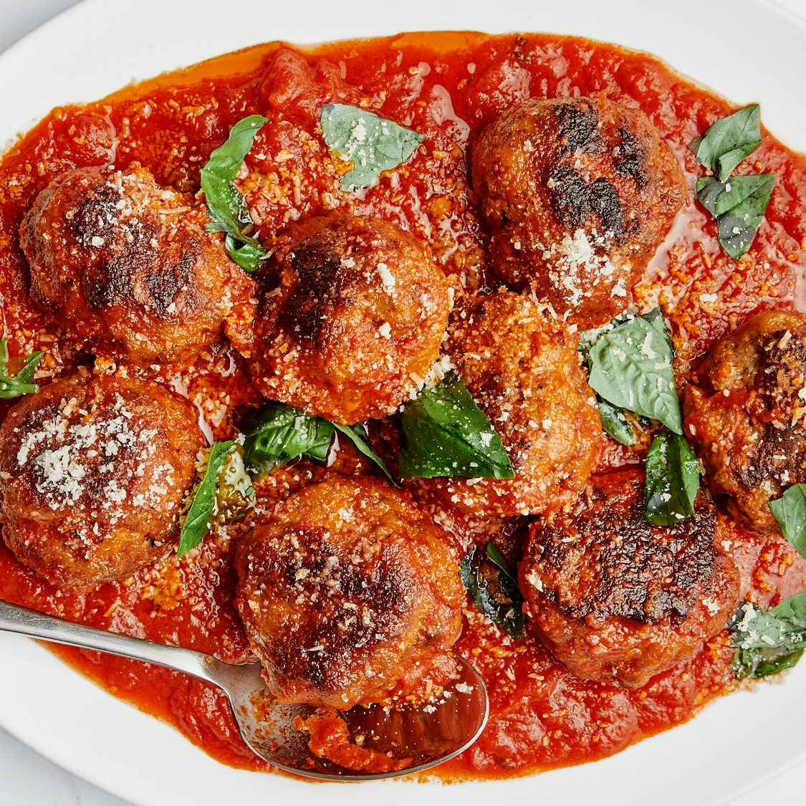

Another personal favorite of ours here at Odin Recipes. The weeknight meatball.
From prep to plate, these meatballs take about 1 hour. You'll be amazed by how the stand up to meatballs that take much more time and effort.
As far as prep goes, there isn't much needed. Have all your ingredients ready to go in front of you for an easy
and streamlined cooking experience
Place rack in top third of oven; preheat to 425°. Lightly brush a large rimmed baking sheet with oil. Using a sturdy wooden spoon,
vigorously stir eggs, panko, milk, salt, garlic powder, several cranks of pepper, 1 oz. Parmesan, and remaining 2 Tbsp. oil in a medium bowl
until nearly a smooth paste. Mix in one quarter of meat (combining just a small amount of meat in the beginning makes it easier to incorporate
the rest without overmixing). Add remaining meat and mix well to thoroughly combine, but don’t overwork it. Using oiled hands, form
8 large meatballs and place on prepared baking sheet.
Bake meatballs until well browned underneath, about 15 minutes. Using a stiff metal spatula, pry up and turn over meatballs
(they may want to stick a bit). Bake until browned on second side and an instant-read thermometer inserted into the center of each one
registers 160°, 5–7 minutes.
Divide meatballs among plates and spoon some sauce over. Top with basil and more Parmesan.